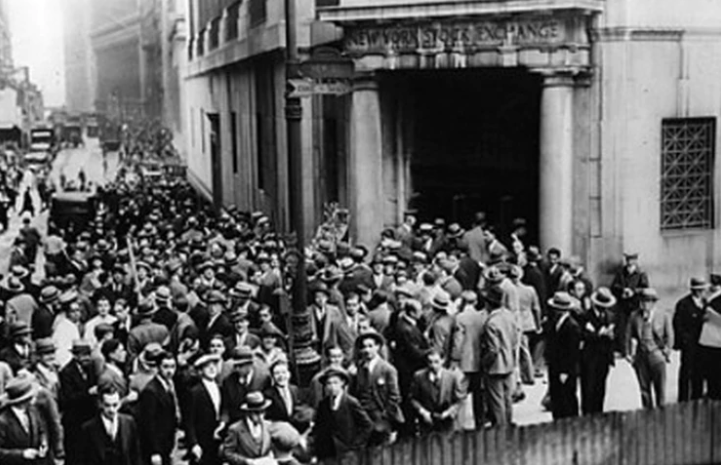

Introducción

La década de 1930 fue un período de grandes cambios económicos en Argentina. La crisis mundial iniciada en 1929 afectó profundamente al país porque la economía dependía principalmente de la exportación de productos agropecuarios.
La reducción del comercio internacional generó dificultades para productores, empresas y trabajadores. Como consecuencia, el Estado comenzó a intervenir cada vez más en la economía para intentar resolver los problemas provocados por la crisis.
El Modelo Agroexportador
Desde fines del siglo XIX la economía argentina se había basado en la producción de materias primas destinadas al mercado internacional.
Los principales productos exportados eran carne vacuna, trigo, maíz y otros cereales. Gran parte de la riqueza nacional provenía de estas exportaciones.
Este modelo generó crecimiento económico durante varias décadas, pero también creó una fuerte dependencia respecto del comercio exterior.
La Crisis Mundial de 1929
En octubre de 1929 se produjo el derrumbe de la Bolsa de Nueva York. Este acontecimiento desencadenó una crisis económica que afectó a gran parte del mundo.
Los países industrializados redujeron sus compras de alimentos y materias primas, perjudicando a los países exportadores como Argentina.
Consecuencias Económicas
- Caída de las exportaciones.
- Disminución de ingresos nacionales.
- Aumento del desempleo.
- Reducción de inversiones extranjeras.
- Disminución del consumo.
- Crisis en sectores productivos.
Intervención del Estado
Ante la gravedad de la situación económica, el Estado comenzó a intervenir más activamente en la organización de la producción y el comercio.
Se implementaron medidas destinadas a proteger la economía nacional y reducir los efectos de la crisis internacional.
Juntas Reguladoras
Durante este período se crearon diferentes Juntas Reguladoras encargadas de controlar la producción y comercialización de diversos productos.
Estas instituciones intentaban evitar una caída excesiva de precios y proteger a los productores nacionales.
Pacto Roca-Runciman
En 1933 Argentina firmó con el Reino Unido el Pacto Roca-Runciman.
El acuerdo garantizaba la continuidad de ciertas exportaciones argentinas, especialmente de carne, hacia el mercado británico.
Sin embargo, fue muy criticado porque muchos consideraban que otorgaba demasiadas ventajas a los intereses británicos.
Industrialización por Sustitución de Importaciones
La disminución de las importaciones impulsó el crecimiento de industrias nacionales.
Muchas fábricas comenzaron a producir bienes que antes se compraban en el exterior.
Este proceso permitió la expansión de la industria y el crecimiento del empleo urbano.
Creación del Banco Central
En 1935 se creó el Banco Central de la República Argentina con el objetivo de organizar la política monetaria y financiera nacional.
Su creación representó un paso importante en la intervención del Estado en la economía.
Conclusión
La década de 1930 transformó profundamente la economía argentina. La crisis internacional provocó dificultades, pero también impulsó cambios que favorecieron el crecimiento industrial y una mayor participación estatal en asuntos económicos.